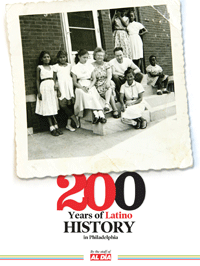

<body bgcolor="#FFFFFF" text="#000000" link="#0000FF" vlink="#CC0000" alink="#CC0000"><center><hr width="350" size="1" align="center" noshade>A celebration of Latino history in the City of Brotherly Love<hr width="350" size="1" align="center" noshade><p><a href="https://cdcshoppingcart.uchicago.edu/Cart/ChicagoBook.aspx?ISBN=9780578106601&&PRESS=temple" target="_top">Buy this book!</a> | <a href="https://cdcshoppingcart.uchicago.edu/Cart/Cart.aspx?PRESS=temple" target="_top">View Cart</a> | <a href="https://cdcshoppingcart.uchicago.edu/Cart/Cart.aspx?PRESS=temple" target="_top">Check Out</a></p><p></p></center><!--none//--><h1>200 Years of Latino History in Philadelphia</h1>
<h3>The Staff of Al D�a</h3>
<P>cloth 0-578-10660-4 $39.95, Nov 12, <FONT COLOR=#990033>Available</FONT>
<BR> 200 pp
8.5 x 11
</P><P><i>200 years of Latino History in Philadelphia</i> is a rich visual account of the history of Latinos in the city. It traces the development of distinct neighborhoods and institutions, and provides a uniquely intimate portrait of a community.
<P>Broken into four sections, the book documents the city's earliest Latino public figures, including Father F&#233;lix Varela, the 19th-century Cuban <i>�migr�</i> who established the first Spanish-language newspaper. The second section collects snapshots of the Latino community from 1950 to 1980. Many of these were selected from personal photo albums and reflect the seldom-documented day-to-day lives of Latinos. Professional photos showcase the years 1980 to 1990, and the final section of the book documents the past twenty years in the community through <i>Al D&#237;a's</i> weekly news coverage.
<p>Distributed by Temple University Press for <i>Al D&#237;a News Media</i>.
<BR>&nbsp;<h2>Reviews</h2>
<p><i>"[A] fun coffee table book.... More importantly you see a history of Philadelphian Latinos </i>trabajando duro<i>, participating in their communities and making a name for themselves."</i> <br>&#151<b>Reforma's online newsletter</b>
<p><i>"[T]he book is full of wonderful photos documenting the Latino community from as early as the 1940s. Many of these images were captured by award-winning Puerto Rican�Philadelphian photographer David Cruz; other photos, especially the ones from 1940�80, were gathered from personal collections. Taken together, these pictures provide a nice glimpse into what was then primarily a Puerto Rican community.... </i>200 Years of Latino History in Philadelphia<i> is more than a good coffee-table book; it is an excellent entryway into what one Latina resident once termed 'an invisible community.' As this book�s astonishing photographs reveal, this community is invisible no more."</i> <br>&#151<b><i>The Pennsylvania Magazine of History and Biography</i></b>
<p><i>"This large-format book is an account of Latinos in Philadelphia throughout the past 200 years. The staff of the local newspaper </i>Al D�a<i> has selected several hundred photos with captions and articles from the newspaper to tell about the leaders and citizens of their community and to show the breadth of activities of their residents in all walks of life and work. They tell of the milestones and highlights of Latinos in religious, civic, education and government areas of Philadelphia, and share stories of successes in academic, social, business and industry and medical fields of members of their community throughout our largest city."</i> <br>&#151<b><i> Pennsylvania Magazine</i></b>
<BR>&nbsp;<H2>About the Author(s)</H2>
<P>The Staff of <i>Al D&#237;a News Media</i>.</P>
<BR><H2>Subject Categories</H2>
<p><A HREF="/tempress/latino.html" TARGET="_top">Latino/a Studies</a>
<BR><A HREF="/tempress/philly.html" TARGET="_top">Philadelphia Region</a>
<BR><A HREF="/tempress/history.html" TARGET="_top">History</a>
</p>
<p align="center"><a href="https://cdcshoppingcart.uchicago.edu/Cart/ChicagoBook.aspx?ISBN=9780578106601&&PRESS=temple" target="_top">Buy this book!</a> | <a href="https://cdcshoppingcart.uchicago.edu/Cart/Cart.aspx?PRESS=temple" target="_top">View Cart</a> | <a href="https://cdcshoppingcart.uchicago.edu/Cart/Cart.aspx?PRESS=temple" target="_top">Check Out</a></p><p><font face="Arial" size="1"><a href="copyright.html" onMouseOver="window.status='Web Copyright Policy';return true;" onMouseOut="window.status=''" title="Web Copyright Policy">&copy;</a> 2015 <a href="http://www.temple.edu" target="new" onMouseOver="window.status='Link to Temple University home page';return true;" onMouseOut="window.status=''" title="Link to Temple University home page">Temple University</a>. All Rights Reserved. http://www.temple.edu/tempress/titles/2271_reg.html</font></p>